1. Overview
VolleyInsight is designed as a volleyball team operating system for coaches. It brings roster management, player development, rotation planning, practice execution, tournament preparation, live referee/scoring workflows, and volleyball paperwork into one app.
Core workflow
VolleyInsight is designed around a connected coaching workflow:
Practice → Measure → Player Development → Build Lineup → Rotation Configuration → Tournament → Referee / Scoring → Paperwork → Review → Repeat
Interface conventions
| Visual / control | Meaning |
|---|---|
| Green | Active, ready, enabled, or successful state. |
| Red | Destructive action, error, or stop condition. |
| Orange / yellow | Warning or attention required. |
| Gray | Inactive or secondary state. |
| Learn / tutorial spotlight | Guided help attached to the current production screen. |
| Volleyball next to a team | That team is the current serving team in scoring views. |
2. Getting Started
Main Menu
The Main Menu is the top-level navigation hub. On both iPhone and iPad it is intended to use a clear single-column layout so each major workflow is easy to find.
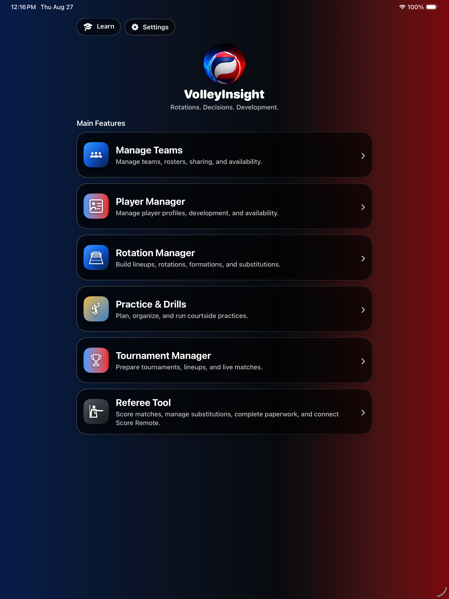
First launch
On a fresh installation, first launch offers Create My Team, Quick Tour, and Skip. The tour is optional and remains available later from Learn.
About the documentation data
Every screen in this manual was captured from the current app using an isolated, in-memory synthetic dataset. The visible DEMO banner belongs to that documentation session; the production build does not currently expose a public “Explore Demo” entry point. Use Quick Tour or Learn for user-facing guidance.
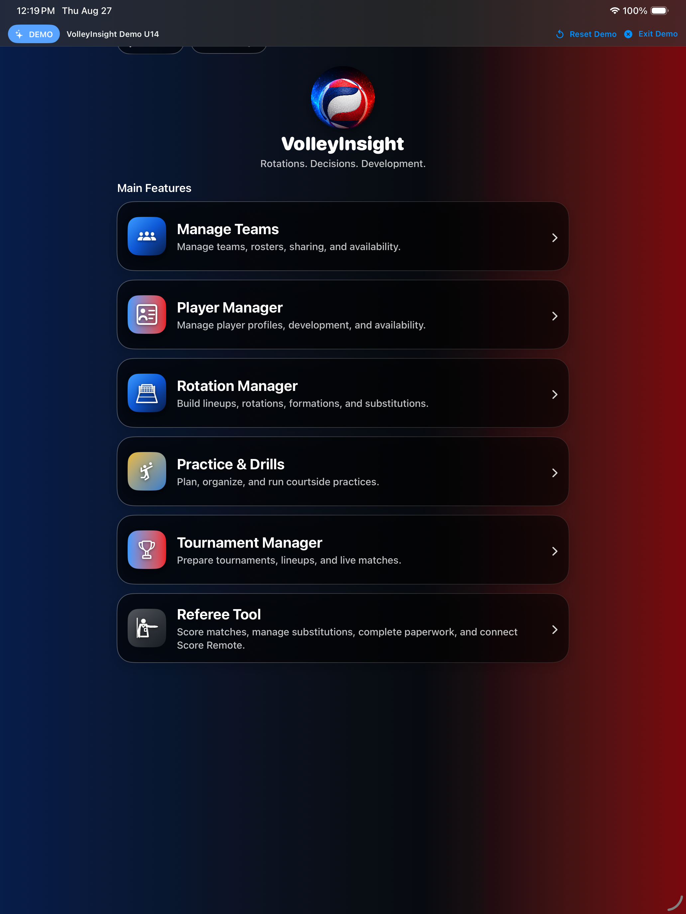
3. Teams & Rosters
Manage Teams
Use Manage Teams to create and maintain the teams you coach. Functional submenu screens intentionally prioritize content over repeated branding.
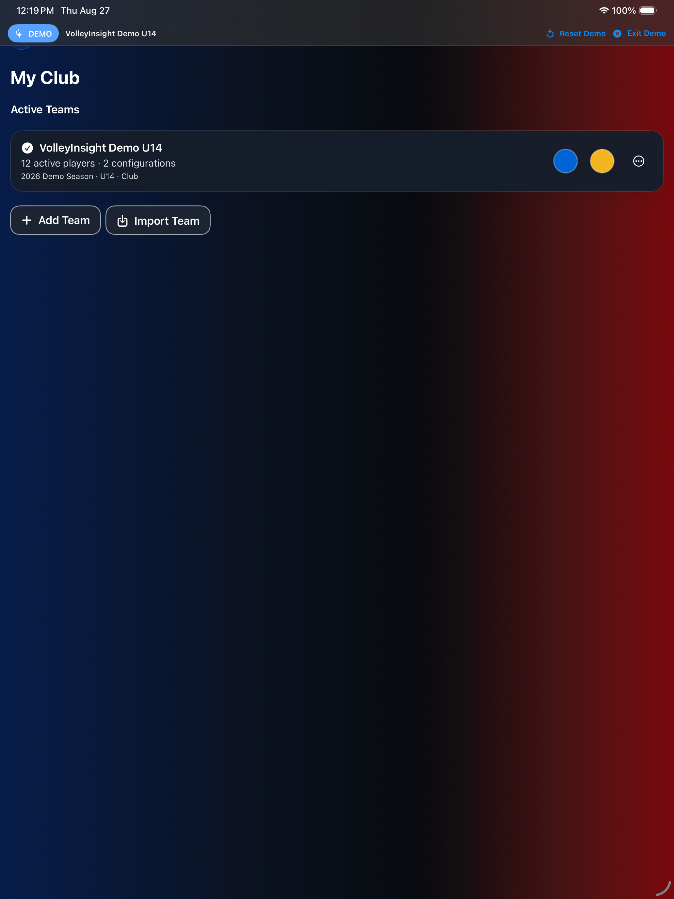
Create or edit a team
- Open Manage Teams.
- Create a team or select an existing team.
- Enter the team name and other available team metadata.
- Save changes before returning to dependent workflows such as Rotation Manager or Tournament Manager.
Roster management
The roster is the source for current team membership. Player selectors in active collection workflows resolve the current roster: newly added players become selectable, while removed players are not offered for new collection work.
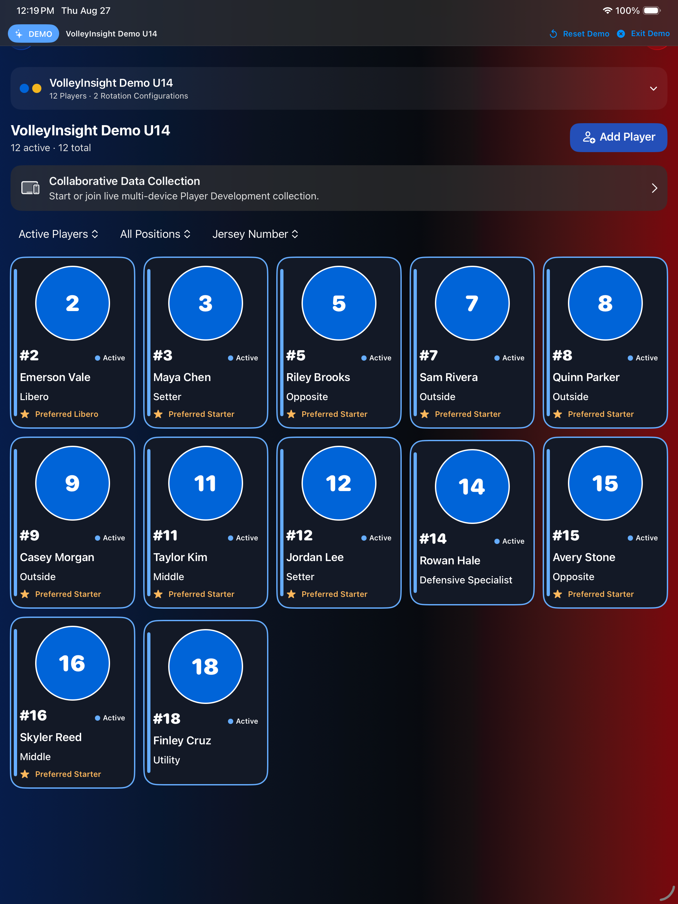
Player profiles
Player records include jersey number, role/position, availability, development measurements, observation history, a progress-report export, and role-aware decision tools. Names and jersey numbers are display fields; the app preserves each player as a distinct identity.
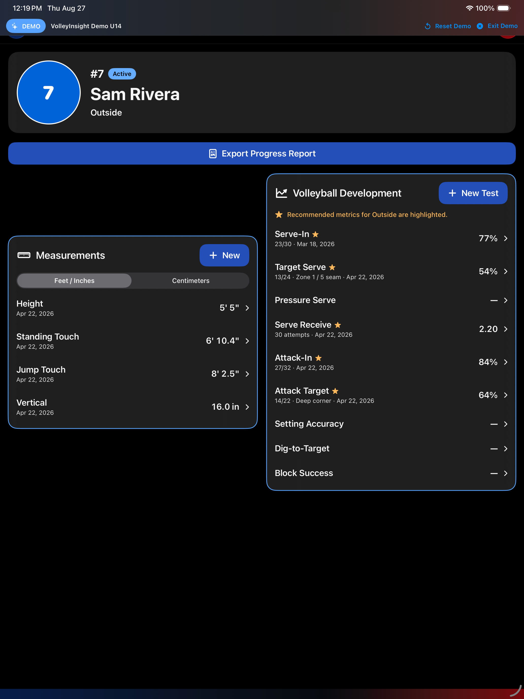
4. Player Development
Player Development is used to record measurements and volleyball skill observations, review trends, and support role-aware lineup decisions.
Development metrics
Depending on player role and available observations, development views may include measures such as Height, Standing Touch, Jump Touch, Vertical, Serve-In %, Target Serve %, Pressure Serve %, Serve Receive Average, 3-Pass %, Playable Pass %, Attack-In %, Attack Target %, Setting Accuracy, Dig-to-Target %, and Block Success.
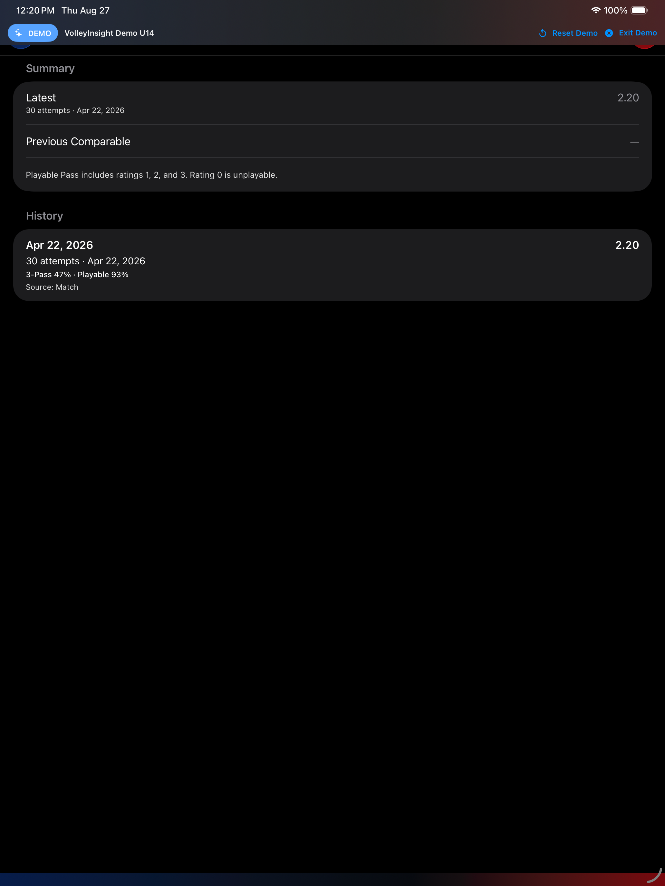
Local Collection
Local Collection lets the device operator collect player observations using one or more Data Cards.
- Open or resume the appropriate collection/evaluation session.
- Choose Add Data Card.
- The app creates the new card and scrolls it into view.
- Select a player from the team's current roster.
- Select the metric to collect.
- Use the gestures/instructions shown on the Data Card to record attempts and successes.
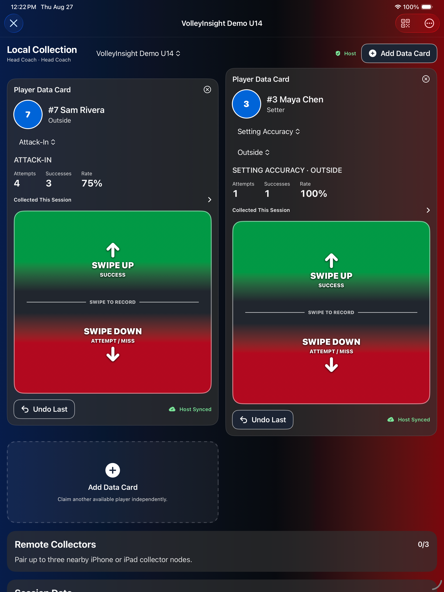
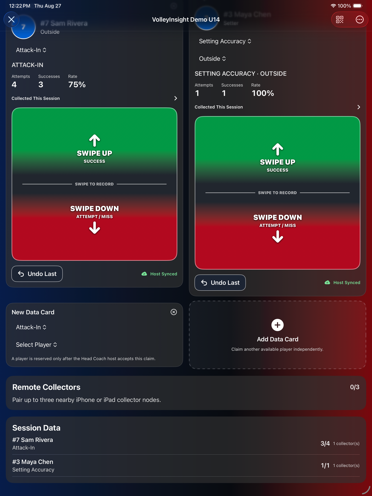
Collaborative collection
When available, collaborative evaluation allows a head-coach device to act as the authoritative host while additional nearby devices collect observations for different players or metrics. Remote collection is intended to preserve collector identity and observation provenance.
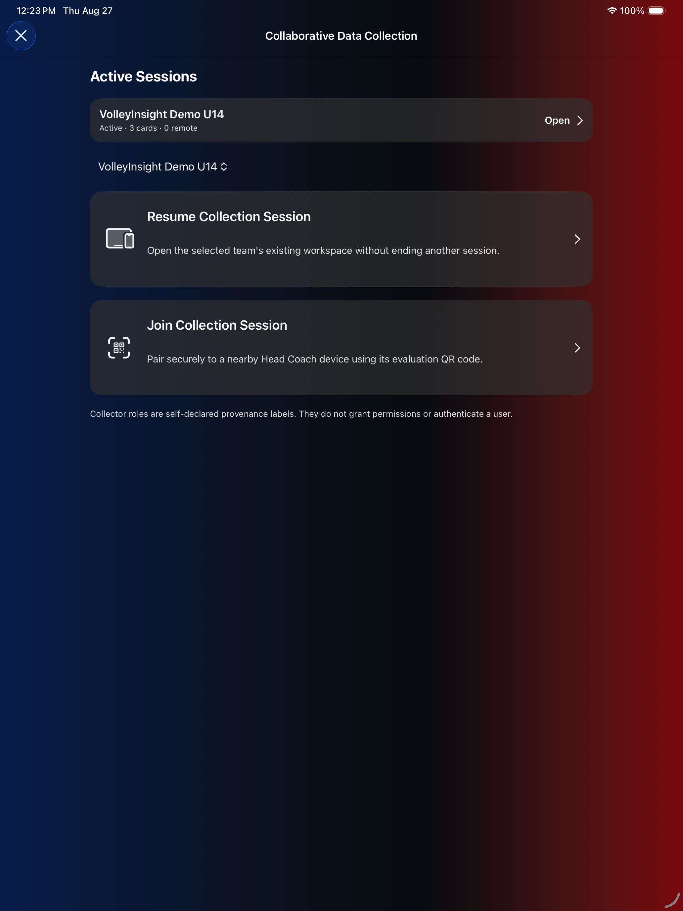
Rankings and lineup guidance
Player Rankings compares players within a selected role and data window. The app labels its value a decision-support score—not an official player rating and shows confidence, missing inputs, and explanations. Treat it as one coaching input alongside observation, availability, role fit, and sample size.
5. Rotation Manager
Rotation Manager helps coaches build, understand, and reuse legal volleyball rotation configurations. It distinguishes the official service order from current on-court occupants and tactical geometry.
Understanding R1–R6
R1 through R6 represent the six rotational service-order states. VolleyInsight may show different tactical phases such as Serve Receive, Serve, and Base/Defense while preserving the underlying legal rotation state.
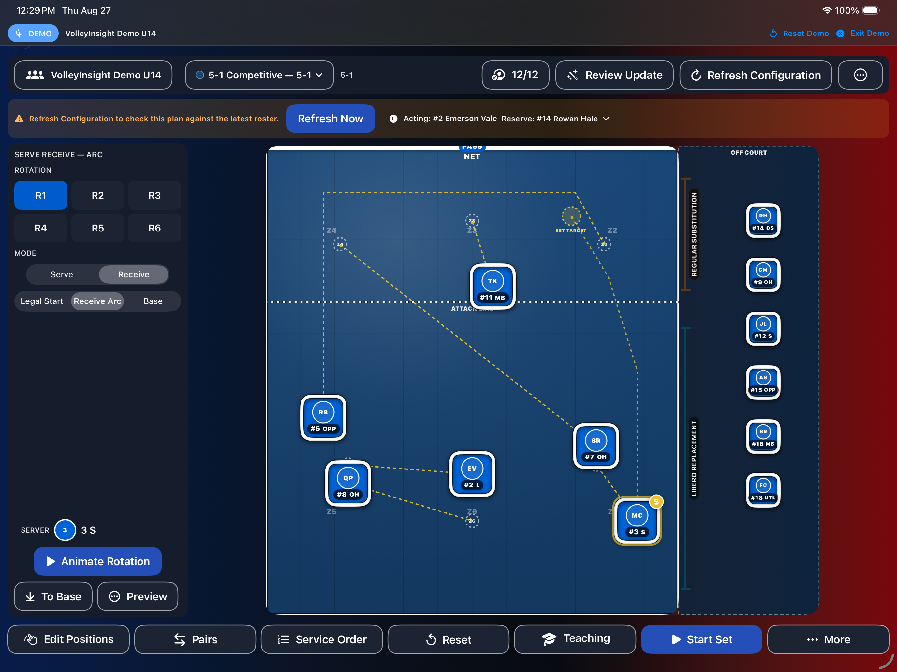
Serve Receive versus Base
Serve Receive describes how the team organizes to receive serve while remaining legally aligned. Base/Defense describes the team's defensive or tactical organization after the first contact. These are not the same formation.
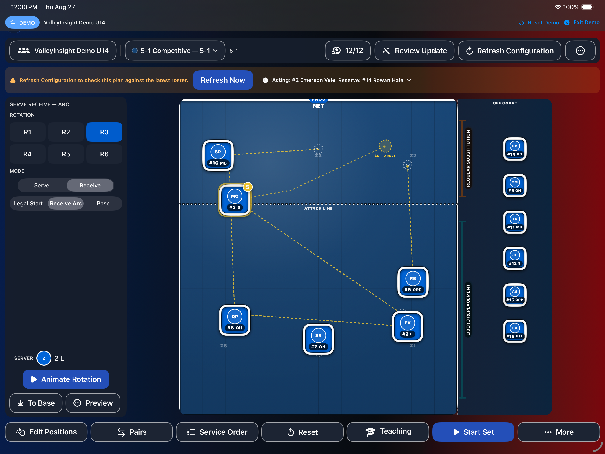
Player movement and replacements
Use the controls available in the current build to reposition players tactically, replace a player, manage substitution pairs, and handle libero replacements. Libero replacement is treated separately from a regular substitution.
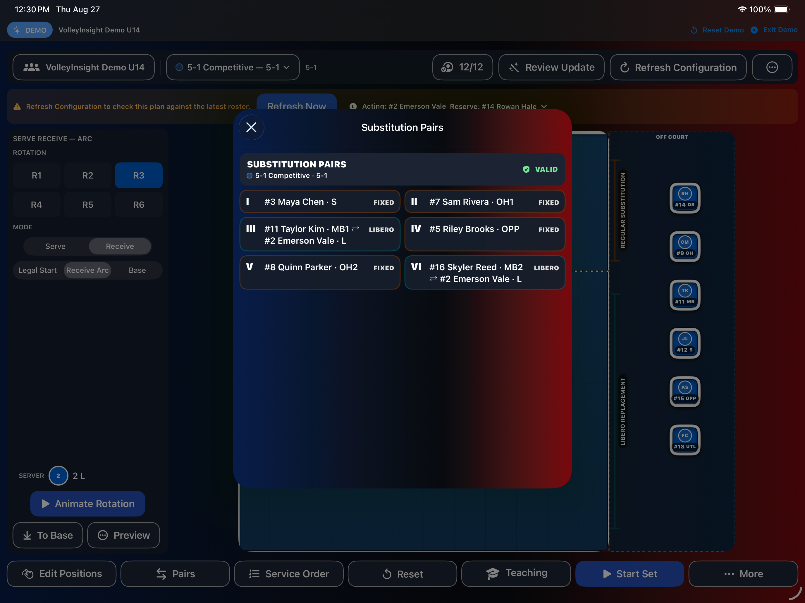
Duplicate a rotation configuration
Duplicate Configuration preserves the coach's customized geometry in a new independent configuration. Editing the copy does not change the original.
Preset systems
The learning references cover 4-2, 5-1, 6-2, 6-3, and 6-6 systems using the production Rotation Manager. These are educational starting points; no one system is universally best for every roster.
6. Practice & Drills
Practice & Drills combines the Practice Planner, check-in, timed drill execution, a practice time budget, countdown timer, scoreboard, training plans, history, and drill/stretch libraries.
Plan a practice
- Open Practice & Drills, then choose Practice Planner.
- Select the desired date/time.
- Create a new practice session.
- Add or arrange drill blocks and breaks.
- Review the planned time budget.
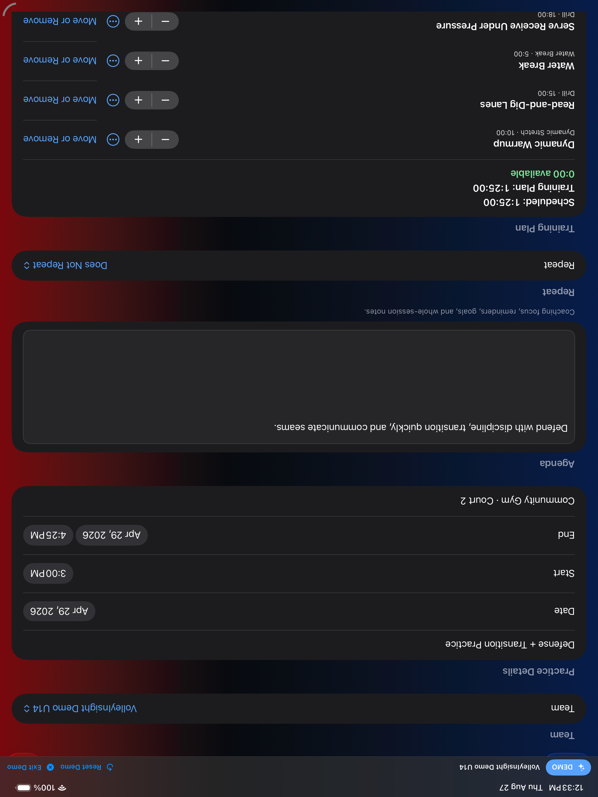
Run a practice
During practice, the running view shows the current block, elapsed and total time, Pause, time adjustments, Previous Drill, Next Drill, Skip, Players / Check-In, Agenda, and End Practice.
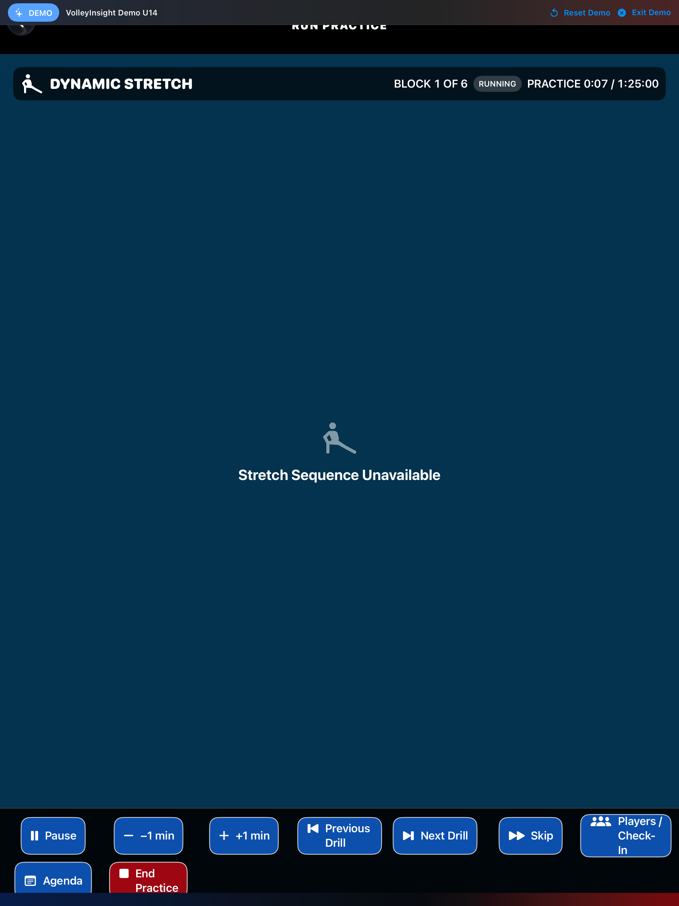
Warm-up / stretch sequence
Planned sessions can include a Dynamic Stretch block. If a referenced guided sequence is not installed, the live screen reports Stretch Sequence Unavailable; the timer and Previous Drill, Next Drill, Skip, check-in, agenda, and End Practice controls remain available.
7. Tournament Manager
Tournament Manager is designed to prepare a team for competition, connect a selected rotation/lineup to live match operation, and preserve match history.
Tournament list
The opening screen lists active or upcoming tournaments and provides New Tournament. Selecting an event opens its competition profile, paperwork standard, match format, notes, and matches.
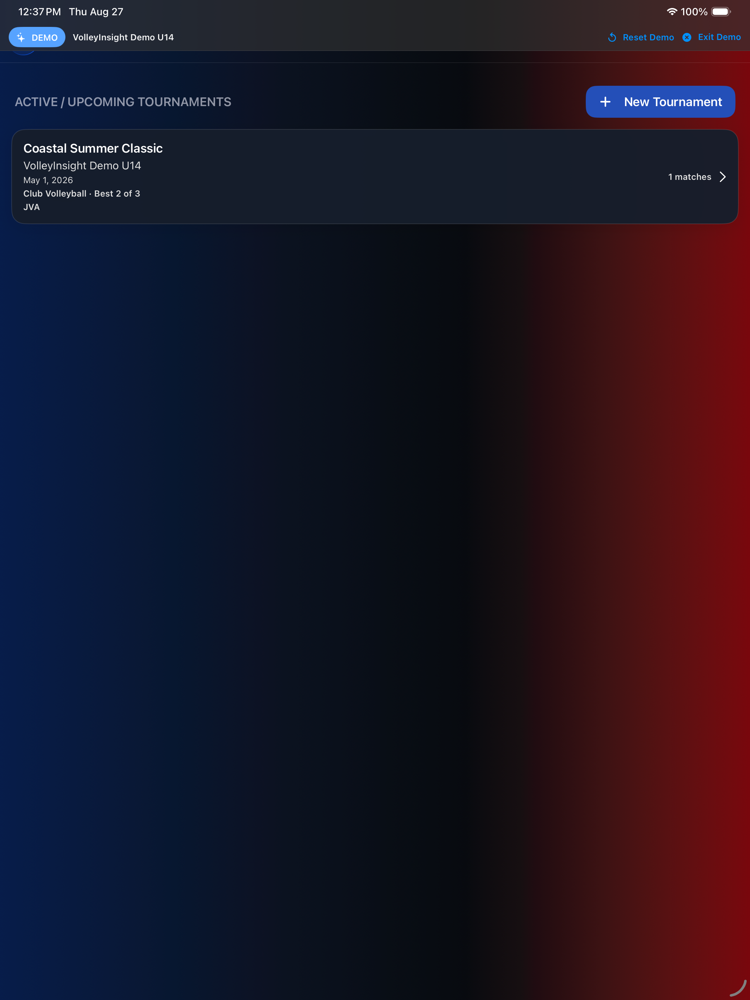
Create a tournament
New Tournament collects the team, name, date, location, division, notes, competition profile, paperwork standard, and match format. Defaults come from Settings and can be overridden for the event.
Edit an existing tournament
Existing tournaments can be modified through the available Edit action. Safe event metadata can be updated without replacing the tournament identity. Once live/historical match data exists, structural changes that would reinterpret prior play may be restricted.
Duplicate a tournament
Use Duplicate Tournament to reuse event configuration for another team attending the same event. The duplicate should open as a reviewable, prefilled new tournament with a new independent identity and no copied live score/match history.
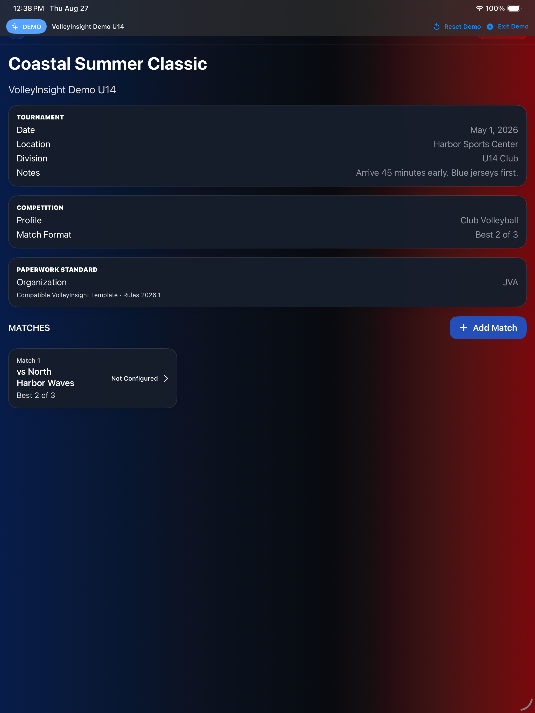
Start competition
Before starting a set, verify the team, selected rotation/configuration, starting lineup, libero assignments, and any required competition profile or paperwork settings.
8. Referee Tool
The Referee Tool supports standalone scoring/referee workflows and is designed for quick courtside operation.
Start a set
Before the first rally, explicitly select Receive or Serve in team mode, or choose the starting server in Referee Tool. If the rotation no longer matches the roster, VolleyInsight blocks the start and asks you to refresh the configuration instead of silently using stale personnel.
Scoring
The Referee Tool shows both scores, a volleyball beside the serving team, the selected starting server, rotations, substitutions, Libero state, timeouts, teaching assistance, recent events, and paperwork actions. Swipe a score up to add a point and down to correct one.
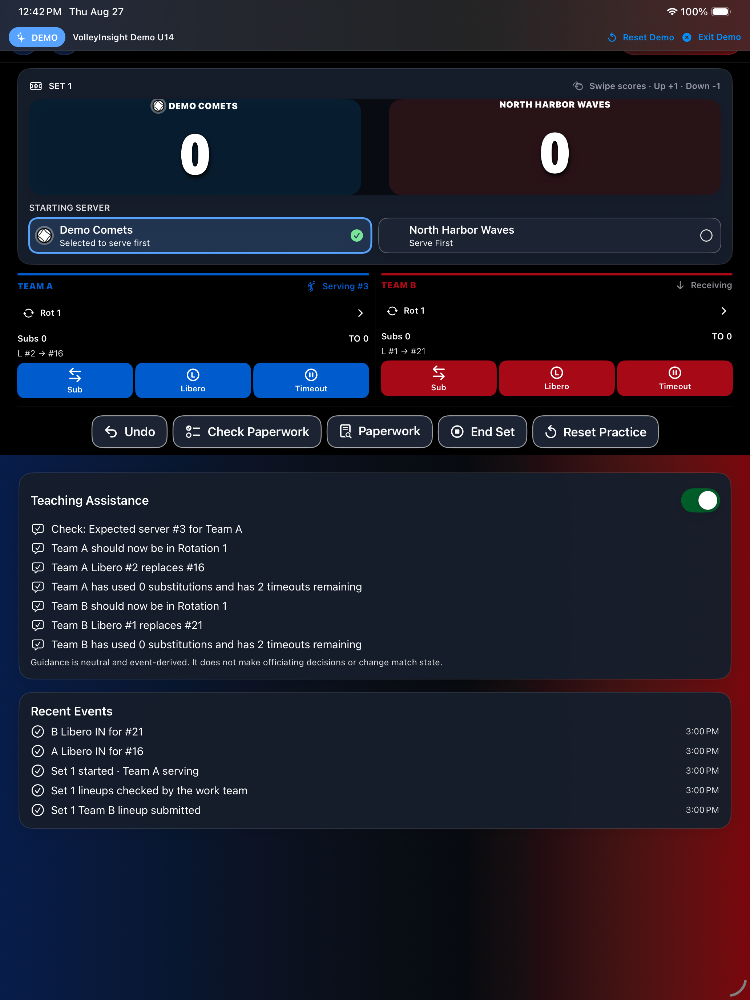
Side-out behavior
- If the serving team wins the rally, it keeps serve and does not rotate.
- If the receiving team wins the rally, it gains serve and rotates exactly once.
End Set
Manual End Set is an administrative/referee action available at 0–0. Ending at 0–0 does not fabricate a set winner.
9. Paperwork
VolleyInsight projects its saved match state into paperwork views and PDF exports. The local event record is the app’s source for those projections, but app output is not itself the legally official match record.
Supported document families
Installed rule profiles and form packages determine which lineup sheets, scoresheets, Libero-control documents, and compatible form families are available. A “compatible” VolleyInsight template must not be described as an official publication of the named organization.
Preview and fitting
Paperwork views provide document selection, fit controls, and PDF export/share when a matching installed template is available. Verify the selected organization and rules snapshot before relying on the projection courtside.
Export
Use the Paperwork action in a live set, then the available PDF export/share action. Retain the organization’s required official record separately.
10. Help & Learning
VolleyInsight includes contextual learning so coaches can discover features without reading the entire manual first.
Learning Center
Learn VolleyInsight includes Set Up Your Team, Build Your First Rotation, Run a Practice, Understand R1–R6 and Serve Receive, Prepare for a Tournament, Score a Match / Referee a Set, and Develop and Evaluate Players. Progress is informational; tutorials remain replayable.
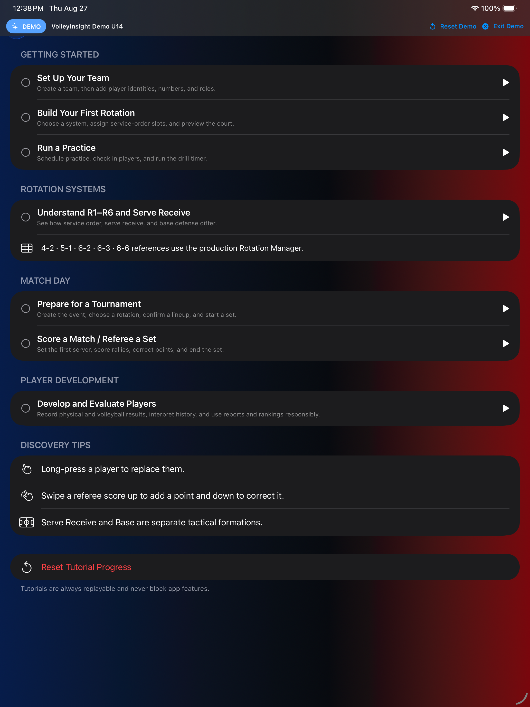
In-context help
Guided tutorials dim the live screen, spotlight the relevant production control, and keep the underlying screen interactive. Use Next, Back, Learn, Hide, or Exit from the tutorial card.
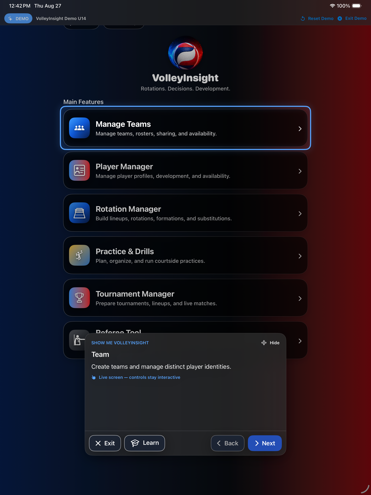
Replay tutorials
Completed tutorials remain replayable, and resetting tutorial progress does not change volleyball records.
11. Settings & Data
Settings provides access to the Learning Center, Tournament & Competition defaults, Paperwork Standards, and Backup & Restore. The screenshot focuses on the production competition, paperwork, and backup controls.
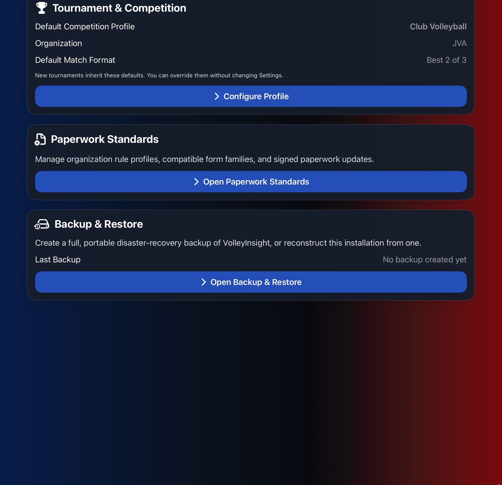
Data protection
VolleyInsight is designed so coach-created data is not silently regenerated merely because the UI or roster changes. Historical records should preserve the identity/context needed to interpret them later.
Backup / restore
Use Open Backup & Restore to create a portable disaster-recovery export or restore an installation from a compatible backup. Backups are user-initiated; the app does not claim automatic cloud backup.
12. Suggested Match-Day Workflow
- Open the correct Team and confirm the current roster.
- Open Tournament Manager and choose/create the tournament.
- Verify the competition profile and event information.
- Select the intended Rotation Configuration.
- Review the starting lineup and libero assignments.
- Start the set and confirm the first serving team.
- Score rallies and verify side-out/rotation behavior.
- Record substitutions/libero activity through the supported workflow.
- End the set when appropriate.
- Review/export required paperwork.
- Confirm the completed match/tournament record before leaving the venue.
13. Troubleshooting
A newly added roster player is missing from Local Collection
Return to the player selector and confirm you are collecting for the correct team. Active collection should resolve new selectable players from the current team roster. If a current player is still missing after returning to the screen, record the exact steps and app version for support.
A removed player still appears in a picker
A player removed from the current team should not be offered for new data collection. Historical observations may still retain that player's identity. If the removed player remains selectable for new work, report it as a roster-synchronization issue.
I tapped Add Data Card but nothing seemed to happen
The Local Collection view should automatically scroll to the newly created Data Card. If it does not, verify whether a new card was actually created and report the device/orientation.
I cannot see all fields in a popup
On smaller screens, multi-field forms may scroll. Look for a bottom fade, down chevron, or other more-content indicator. On iPad, forms should use available vertical space rather than forcing unnecessary scrolling.
Rotation behavior looks wrong after a side-out
Remember: the receiving team rotates only when it wins the rally and gains serve. The serving team does not rotate after winning a rally.
Paperwork looks shifted or too small
Reopen the document and use the available fit/zoom controls. The default preview should center the document and choose an appropriate Fit Page/Fit Width behavior for the device.
14. Privacy, Support & Version Notes
This public manual was verified against the current VolleyInsight target and real iPad simulator renders. Screenshots use only the app’s isolated synthetic documentation dataset.
When requesting support
Include the VolleyInsight app version/build, iPhone/iPad model, iOS/iPadOS version, affected team/workflow, and reproducible steps. Screenshots are useful when they contain synthetic/non-sensitive information.
Manual maintenance
The app is the source of truth for this manual. Re-verify control names, screenshots, supported form packages, app version, and OS behavior with each release.